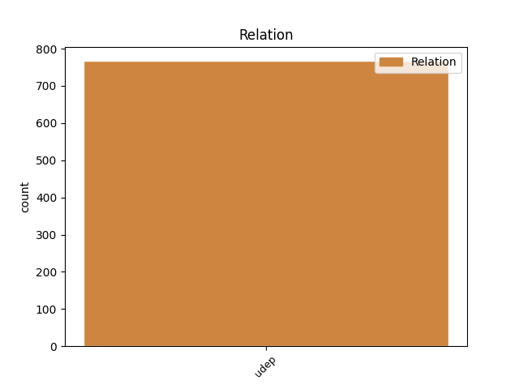
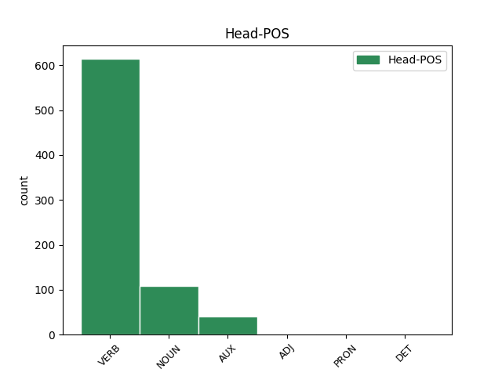
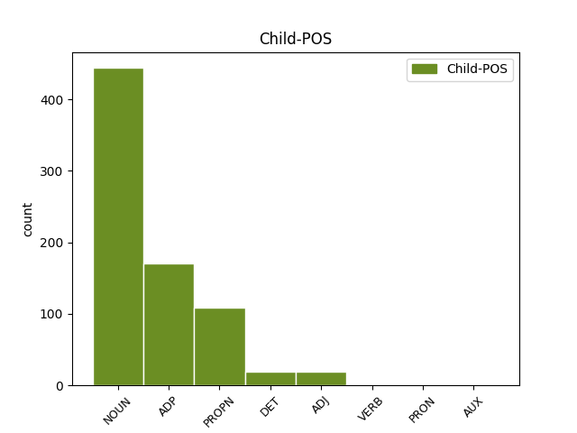

Distribution of features within this leaf



Agreement Rules sorted by frequency.
- When the dependent token is the underspecified dependency(udep) of the head token, and the head token is VERB
1 AURREKO _ _ _ _ 0 _ _ _
2 astetik _ _ _ _ 0 _ _ _
3 Munduko _ _ _ _ 0 _ _ _
4 Txapelketa _ _ _ _ 0 _ _ _
5 jokatzen jokatu VERB _ Case=Ine 0 _ _ _
6 ari _ _ _ _ 0 _ _ _
7 dira _ _ _ _ 0 _ _ _
8 Guatemalan Guatemala PROPN _ Case=Ine|Definite=Def|Number=Sing 5 udep _ SpaceAfter=No
9 , _ _ _ _ 0 _ _ _
10 eta _ _ _ _ 0 _ _ _
11 jadanik _ _ _ _ 0 _ _ _
12 erabakita _ _ _ _ 0 _ _ _
13 daude _ _ _ _ 0 _ _ _
14 finalerdiak _ _ _ _ 0 _ _ _
15 . _ _ _ _ 0 _ _ _
1 Atzealdean atzealde NOUN _ Animacy=Inan|Case=Ine|Definite=Def|Number=Sing 3 udep _ _
2 sendo _ _ _ _ 0 _ _ _
3 egoten egon AUX _ Case=Ine 0 _ _ _
4 ikasi _ _ _ _ 0 _ _ _
5 behar _ _ _ _ 0 _ _ _
6 dugu _ _ _ _ 0 _ _ _
7 . _ _ _ _ 0 _ _ _
1 Talde _ _ _ _ 0 _ _ _
2 berria _ _ _ _ 0 _ _ _
3 Domo-Farm _ _ _ _ 0 _ _ _
4 Frites _ _ _ _ 0 _ _ _
5 deituko _ _ _ _ 0 _ _ _
6 da _ _ _ _ 0 _ _ _
7 , _ _ _ _ 0 _ _ _
8 eta _ _ _ _ 0 _ _ _
9 orain _ _ _ _ 0 _ _ _
10 arteko arte ADP _ Case=Loc 12 udep _ _
11 bi _ _ _ _ 0 _ _ _
12 taldeetako talde NOUN _ Animacy=Inan|Case=Loc|Definite=Def|Number=Plur 0 _ _ _
13 egiturak _ _ _ _ 0 _ _ _
14 aukera _ _ _ _ 0 _ _ _
15 berdinean _ _ _ _ 0 _ _ _
16 lehiatuko _ _ _ _ 0 _ _ _
17 dira _ _ _ _ 0 _ _ _
18 . _ _ _ _ 0 _ _ _
Disagree Examples:
1 Bestalde _ _ _ _ 0 _ _ _
2 , _ _ _ _ 0 _ _ _
3 " _ _ _ _ 0 _ _ _
4 herri _ _ _ _ 0 _ _ _
5 palestinarrari _ _ _ _ 0 _ _ _
6 laguntza _ _ _ _ 0 _ _ _
7 tekniko _ _ _ _ 0 _ _ _
8 eta _ _ _ _ 0 _ _ _
9 ekonomikoa _ _ _ _ 0 _ _ _
10 ematen _ _ _ _ 0 _ _ _
11 jarraitzeko _ _ _ _ 0 _ _ _
12 eta _ _ _ _ 0 _ _ _
13 Estatu _ _ _ _ 0 _ _ _
14 baketsu _ _ _ _ 0 _ _ _
15 eta _ _ _ _ 0 _ _ _
16 demokratiko _ _ _ _ 0 _ _ _
17 baten _ _ _ _ 0 _ _ _
18 ordezkari _ _ _ _ 0 _ _ _
19 diren _ _ _ _ 0 _ _ _
20 erakunde _ _ _ _ 0 _ _ _
21 palestinarrak _ _ _ _ 0 _ _ _
22 indartzeko _ _ _ _ 0 _ _ _
23 lanean lan NOUN _ Animacy=Inan|Case=Ine|Definite=Def|Number=Sing 24 udep _ _
24 jarraitzeko jarraitu VERB _ Case=Loc 0 _ _ _
25 konpromisoa _ _ _ _ 0 _ _ _
26 " _ _ _ _ 0 _ _ _
27 baieztatu _ _ _ _ 0 _ _ _
28 zuen _ _ _ _ 0 _ _ _
29 EBk _ _ _ _ 0 _ _ _
30 . _ _ _ _ 0 _ _ _
1 Donostiako _ _ _ _ 0 _ _ _
2 aurrelariak _ _ _ _ 0 _ _ _
3 entrenamendua _ _ _ _ 0 _ _ _
4 normaltasunez _ _ _ _ 0 _ _ _
5 amaitu _ _ _ _ 0 _ _ _
6 bazuen _ _ _ _ 0 _ _ _
7 ere _ _ _ _ 0 _ _ _
8 , _ _ _ _ 0 _ _ _
9 etxera etxe NOUN _ Animacy=Inan|Case=All|Definite=Def|Number=Sing 10 udep _ _
10 heltzean heldu VERB _ Case=Ine 0 _ _ _
11 buruko _ _ _ _ 0 _ _ _
12 mina _ _ _ _ 0 _ _ _
13 zuelako _ _ _ _ 0 _ _ _
14 , _ _ _ _ 0 _ _ _
15 ospitalera _ _ _ _ 0 _ _ _
16 joatea _ _ _ _ 0 _ _ _
17 erabaki _ _ _ _ 0 _ _ _
18 zuen _ _ _ _ 0 _ _ _
19 . _ _ _ _ 0 _ _ _
1 Donostiako _ _ _ _ 0 _ _ _
2 aurrelariak _ _ _ _ 0 _ _ _
3 entrenamendua _ _ _ _ 0 _ _ _
4 normaltasunez _ _ _ _ 0 _ _ _
5 amaitu _ _ _ _ 0 _ _ _
6 bazuen _ _ _ _ 0 _ _ _
7 ere _ _ _ _ 0 _ _ _
8 , _ _ _ _ 0 _ _ _
9 etxera _ _ _ _ 0 _ _ _
10 heltzean _ _ _ _ 0 _ _ _
11 buruko _ _ _ _ 0 _ _ _
12 mina _ _ _ _ 0 _ _ _
13 zuelako _ _ _ _ 0 _ _ _
14 , _ _ _ _ 0 _ _ _
15 ospitalera ospitale NOUN _ Case=All|Definite=Def|Number=Sing 16 udep _ _
16 joatea joan VERB _ Case=Abs 0 _ _ _
17 erabaki _ _ _ _ 0 _ _ _
18 zuen _ _ _ _ 0 _ _ _
19 . _ _ _ _ 0 _ _ _
1 " _ _ _ _ 0 _ _ _
2 Tourrean tour NOUN _ Case=Ine|Definite=Def|Number=Sing 4 udep _ _
3 ez _ _ _ _ 0 _ _ _
4 egotearen egon VERB _ Case=Gen|Definite=Def|Number=Sing 0 _ _ _
5 arrazoietako _ _ _ _ 0 _ _ _
6 bat _ _ _ _ 0 _ _ _
7 dirua _ _ _ _ 0 _ _ _
8 da _ _ _ _ 0 _ _ _
9 . _ _ _ _ 0 _ _ _
1 Diktadurako _ _ _ _ 0 _ _ _
2 biktimen _ _ _ _ 0 _ _ _
3 aldeen _ _ _ _ 0 _ _ _
4 abokatuak _ _ _ _ 0 _ _ _
5 , _ _ _ _ 0 _ _ _
6 berriz _ _ _ _ 0 _ _ _
7 , _ _ _ _ 0 _ _ _
8 atsekabetuta _ _ _ _ 0 _ _ _
9 azaldu _ _ _ _ 0 _ _ _
10 ziren _ _ _ _ 0 _ _ _
11 eta _ _ _ _ 0 _ _ _
12 Goreneko _ _ _ _ 0 _ _ _
13 lehendakariarekin lehendakari NOUN _ Case=Com|Definite=Def|Number=Sing 14 udep _ _
14 biltzeko bildu VERB _ Case=Abs|Definite=Ind 0 _ _ _
15 eskatu _ _ _ _ 0 _ _ _
16 zuten _ _ _ _ 0 _ _ _
17 . _ _ _ _ 0 _ _ _